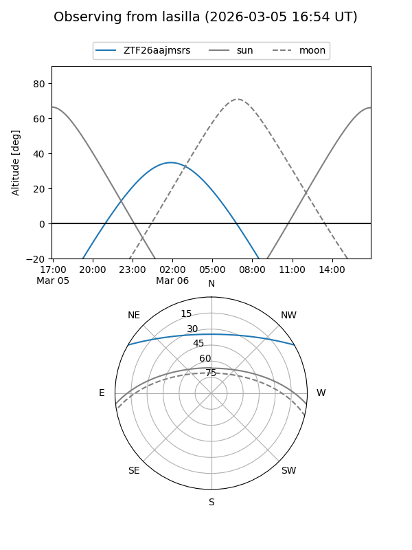
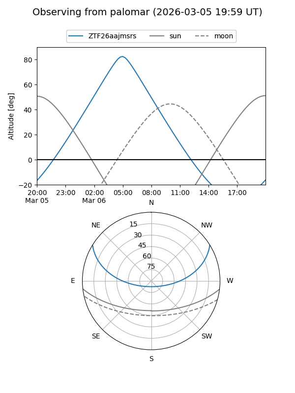

ZTF26aajmsrs
Target ZTF26aajmsrs at 2026-03-06 06:49
Aliases and brokers:
FINK: link
Lasair: link
ALeRCE: link
alt names
ZTF26aajmsrs (ztf,fink_ztf)
Coordinates:
equatorial (ra, dec) = 120.7989,+25.99863
equatorial (HMS+DMS) = 08:03:11.73,+25:59:55.06
galactic (l, b) = (195.7814,+26.50437)
Flags:
Photometry:
last ztfg=19.89
1 ztfg detections
Lightcurve
Visibility


Additional plots